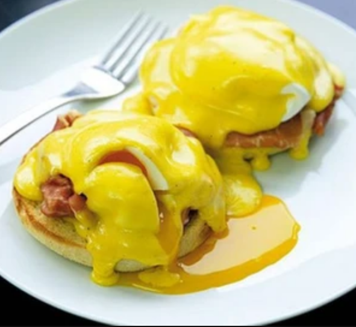

Eggs Benedict

Gordon Ramsay's recipe for the perfect eggs benedict!
This dish features poached eggs, parma ham and hollandaise sauce on fluffy english muffins.
You should allow about 5 minutes prep time and 15 minutes cook time. This recipe makes 4
halves with a total calorie count of 705 kcal, so scale up or down as needed! Diffuculty
rating is a challenge.
Please click on the image above to follow the link to the original site and
recipe!
Ingredients
- 3 tbsp white wine vinegar
- 4 free range eggs
- 2 toasting muffins
- 4 parma ham
For the hollandaise sauce
- 125g butter
- 2 egg yolks
- 1/2 tsp white wine vinegar or tarragon vinegar
- squeeze of lemon juice
- pinch of cayenne pepper
To prepare
-
Bring a deep saucepan of water to the boil (at least 2 litres) and add 3 tbsp white wine
vinegar. Lower the heat down to a gentle simmer.
-
Break the eggs into four separate coffee cups or ramekins. Split the muffins, toast
them for a few minutes either side and warm some plates.
To make the hollandaise
-
Melt the butter in a saucepan and skim any white solids from the surface. Keep the
butter warm.
-
Put the egg yolks, white wine or tarragon vinegar, a pinch of salt and a plash of
ice-cold water in a metal or glass bowl that will fit over a small pan. Whisk for a
few minutes, then put he bowl over a pan of barely simmering water and whisk
continuously until pale and thick, about 3-5 mins.
-
Remove from the heat and slowly whisk in the melted butter bit by bit until it's all
incorporated and you have a creamy hollondaise. (If it gets too thick, add a splash of
water.) Season with a squeeze of lemon juice an a little cayenne pepper. Keep warm until
needed.
To make eggs benedict
-
Swirld the simmering vinegared water briskly to form a vortex and slide in an egg.
It will curl round and set to a neat round shape. Cook for 2-3 min, then remove with
a slotted spoon.
-
Repeat with the other eggs, one at a time, re-swirling the water as your slide in
the eggs. Spread some sauce on each muffin, scrunch a slice of ham on top, then top
with an egg. Spoon over the remaining hollandaise and serve at once.